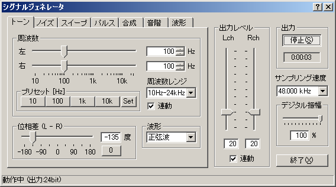
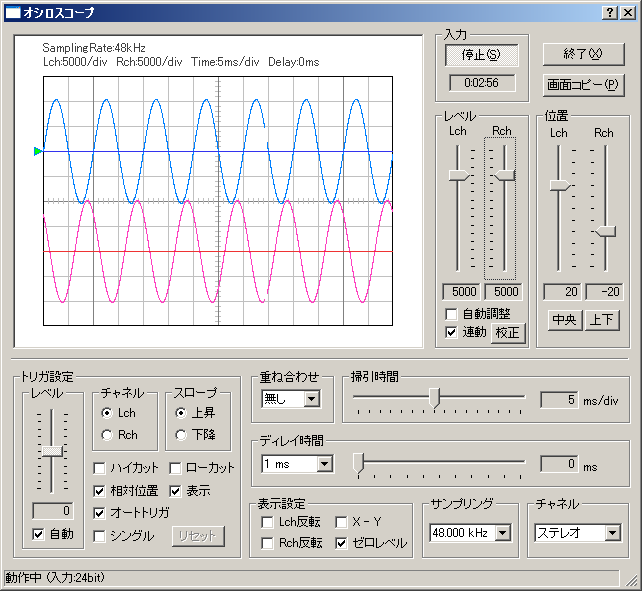

DSSF3 > RA > 操作マニュアル > 基本的な測定方法
シグナルジェネレータとオシロスコープによる測定
測定方法
シグナルジェネレーターは、正弦波、三角波、方形波、のこぎり波を任意の周波数で信号出力したり、周波数を任意に変化させ信号出力できます。測定対象にそれらの信号を入力し、測定対象によって変化させられた出力を測定入力し、RAのオシロスコープを使用して波形表示させます。
オシロスコープは、測定入力を実際の波形として目視することができます。この機能を使用すれば、音響や電気回路、スピーカー再生のファイデリティや歪を調べることができます。さらに細かく出力信号を選択したり、スライドバーで周波数を変化させることにより、すべての周波数にわたって周波数による歪特性を短時間に測定（一目で目視確認）できます。また、この周波数の変化に対する応答特性も目視できます。
音楽、音響再生、音響機器、音響回路など音響全般にわたり本番前の正常動作の確認や、平素の保守点検、異常時の故障診断、性能測定などに広範に使用できます。


DSSF3 > RA > 操作マニュアル > 基本的な測定方法